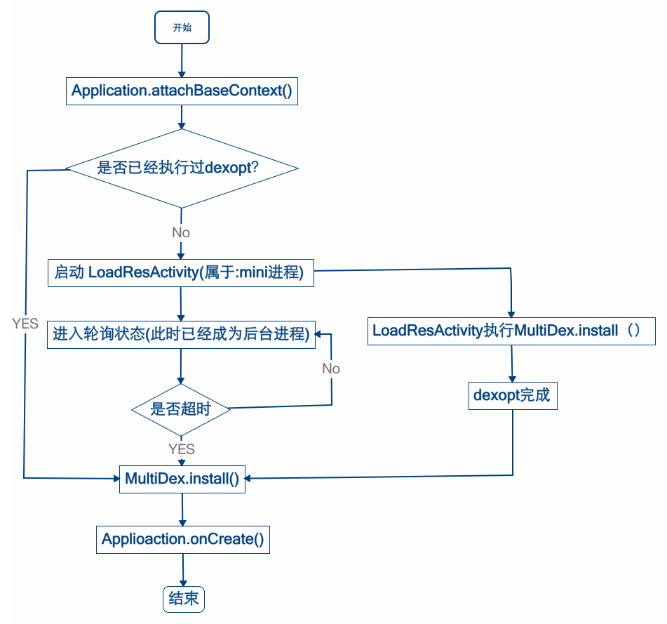

其实你不知道MultiDex到底有多坑
遭遇MultiDex
愉快地写着Android代码的总悟君往工程里引入了一个默默无闻的jar然后Run了一下， 经过漫长的等待AndroidStudio构建失败了。
于是总悟君带着疑惑查看错误信息。
UNEXPECTED TOP-LEVEL EXCEPTION: java.lang.IllegalArgumentException: method ID not in [0, 0xffff]: 65536
at com.android.dx.merge.DexMerger$6.updateIndex(DexMerger.java:501)
at com.android.dx.merge.DexMerger$IdMerger.mergeSorted(DexMerger.java:276)
at com.android.dx.merge.DexMerger.mergeMethodIds(DexMerger.java:490)
at com.android.dx.merge.DexMerger.mergeDexes(DexMerger.java:167)
at com.android.dx.merge.DexMerger.merge(DexMerger.java:188)
at com.android.dx.command.dexer.Main.mergeLibraryDexBuffers(Main.java:439)
at com.android.dx.command.dexer.Main.runMonoDex(Main.java:287)
at com.android.dx.command.dexer.Main.run(Main.java:230)
at com.android.dx.command.dexer.Main.main(Main.java:199)
at com.android.dx.command.Main.main(Main.java:103):Derp:dexDerpDebug FAILED
看起来是：在试图将 classes和jar塞进一个Dex文件的过程中产生了错误。
早期的Dex文件保存所有classes的方法个数的范围在0~65535之间。业务一直在增长，总悟君写(copy)的代码越来越长引入的库越来越多，超过这个范围只是时间问题。
怎么解？？太阳底下木有新鲜事，淡定先google一发，找找已经踩过坑的小伙伴。
StackOverflow 的网友们对该问题表示情绪稳定，谈笑间抛出multiDex。
这是Android官网对当初的短视行为给出的补丁方案。文档说，Dalvik Executable (DEX)文件的总方法数限制在65536以内，其中包括Android framwork method， lib method (后来总悟君发现仅仅是Android 自己的框架的方法就已经占用了1w多)，还有你的 code method ，所以请使用MultiDex。 对于5.0以下版本，请使用multidex support library (这个是我们的补丁包！build tools 请升级到21)。而5.0及以上版本，由于ART模式的存在，app第一次安装之后会进行一次预编译(pre-compilation) ，如果这时候发现了classes(..N).dex文件的存在就会将他们最终合成为一个.oat的文件，嗯看起来很厉害的样子。
同时Google建议review代码的直接或者间接依赖，尽可能减少依赖库，设置proguard参数进一步优化去除无用的代码。嗯，这两个实施起来倒是很简单，但是治标不治本，躲得过初一躲不过十五。 在Google给出这个解决方案之前，他们的开发人员先给了一个简陋简易版本的multiDex具体参看这里。（怀疑后来的官方解决方案就有这家伙参与）。简单地说就是：1.先把你的app 的class 拆分成主次两个dex。2.你的程序运行起来后，自己把第二个dex给load进来。看就这么简单！而且这就是个动态加载模块的框架！ 然而总悟君早已看穿Dalvik VM 这种动态加载dex 的能力归根结底还是因为java 的classloader类加载机制。沿着这条道走，Android模块动态化加载，包括dex级别和apk级别的动态化加载，各种玩法层出不穷。参见这里1 2 3 4 5 6。
第一回合 天真的官方补丁方案
还是先解决打包问题，回头再研究那些高深的动态化加载技术。偷懒一下咯考虑到投入产出比，决定使用Google官方的multiDex解决。(Google的补丁方案啊，不会再有坑了吧？后面才发现还是太天真) 该方案有两步：
1.修改gradle脚本来产生多dex。
2.修改manifest 使用MulitDexApplication。
- 步骤1.在gradle脚本里写上：
android {
compileSdkVersion 21
buildToolsVersion "21.1.0"
defaultConfig {
...
minSdkVersion 14
targetSdkVersion 21
...
// Enabling multidex support.
multiDexEnabled true
}
...
}
dependencies {
compile 'com.android.support:multidex:1.0.0'
}
- 步骤2. manifest声明修改
<?xml version="1.0" encoding="utf-8"?>
<manifest xmlns:android="http://schemas.android.com/apk/res/android"
package="com.example.android.multidex.myapplication">
<application
...
android:name="android.support.multidex.MultiDexApplication">
...
</application>
</manifest>
如果有自己的Application，继承MulitDexApplication。如果当前代码已经继承自其它Application没办法修改那也行，就重写 Application的attachBaseContext()这个方法。
@Override
protected void attachBaseContext(Context base) {
super.attachBaseContext(base);
MultiDex.install(this);
}
run一下，可以了！但是dex过程好像变慢了。。。
文档还写明了multiDex support lib 的局限。瞄一下是什么：
- 1.在应用安装到手机上的时候dex文件的安装是复杂的(complex)有可能会因为第二个dex文件太大导致ANR。请用proguard优化你的代码。呵呵
- 2.使用了mulitDex的App有可能在4.0(api level 14)以前的机器上无法启动，因为Dalvik linearAlloc bug(Issue 22586) 。请多多测试自祈多福。用proguard优化你的代码将减少该bug几率。呵呵
- 3.使用了mulitDex的App在runtime期间有可能因为Dalvik linearAlloc limit (Issue 78035) Crash。该内存分配限制在 4.0版本被增大，但是5.0以下的机器上的Apps依然会存在这个限制。
- 4.主dex被dalvik虚拟机执行时候，哪些类必须在主dex文件里面这个问题比较复杂。build tools 可以搞定这个问题。但是如果你代码存在反射和native的调用也不保证100%正确。呵呵
感觉这就是个坑啊。补丁方案又引入一些问题。但是插件化方案要求对现有代码有比较大的改动，代价太大，而且动态化加载框架意味着维护成本更高，会有更多潜在bug。所以先测试，遇到有问题的版本再解决。
第二回合 啥？dexopt failed？
呵呵，部分低端2.3机型(话说2.3版本的android机有高端机型么)安装失败！
INSTALL_FAILED_DEXOPT。这个就是前面说的Issue 22586问题。
apk是一个zip压缩包，dalvik每次加载apk都要从中解压出class.dex文件，加载过程还涉及到dex的classes需要的杂七杂八的依赖库的加载，真耗时间。于是Android决定优化一下这个问题，在app安装到手机之后，系统运行dexopt程序对dex进行优化，将dex的依赖库文件和一些辅助数据打包成odex文件。存放在cache/dalvik_cache目录下。保存格式为apk路径 @ apk名 @ classes.dex。这样以空间换时间大大缩短读取/加载dex文件的过程。
那刚才那个bug是啥问题呢，原来dexopt程序的dalvik分配一块内存来统计你的app的dex里面的classes的信息，由于classes太多方法太多超过这个linearAlloc 的限制 。那减小dex的大小就可以咯。
gradle脚本如下：
android.applicationVariants.all {
variant ->
dex.doFirst{
dex->
if (dex.additionalParameters == null) {
dex.additionalParameters = []
}
dex.additionalParameters += '--set-max-idx-number=48000'
}
}
--set-max-idx-number= 用于控制每一个dex的最大方法个数，写小一点可以产生好几个dex。 踩过更多坑的FB的工程师表示这个linearAlloc的限制不仅仅在安装时候的dexopt程序里7，还在你的app的dalvik rumtime里。（很显然啊dvk vm的宿主进程fork自于同一个母体啊）。为了表示对这个坑的不满以及对Google的产品表示遗憾，FB工程师Read The Fucking Source Code找到了一个hack方案。这个linearAlloc的size定义在c层而且是一个全局变量，他们通过对结构体的size的计算成功覆盖了该值的内容，这里要特别感谢C语言的指针和内存的设计。C的世界里，You Are The King of This World。当然实际情况是大部分用户用这把利刃割伤了自己。。。别问总悟君谁是世界上最好的语言。。。
为FB的工程师的机智和务实精神点赞！然而总悟君不愿意花那么多精力实现FB的hack方法。（dvk虚拟机c层代码在2.x 4.x 版本里有变更，找到那个内存地址太难，未必搞得定啊）我们有偷懒的解决方案，为了避免2.3机型runtime 的linearAlloclimit ,最好保持每一个dex体积<4M ,刚才的的value<=48000
好了 现在2.3的机器可以安装run起来了！
第三回合 ANR的意思就是Application Not Responding
问题又来了！这次不仅仅是2.3 的机型！还有一些中档配置的4.x系统的机型。问题现象是：第一次安装后，点击图标，1s，2s，3s... 程序没有任何反应就好像你没点图标一样。
5s过去。。。程序ANR!
其实不仅仅总悟君的App存在这个问题，其他很多App也存在首次安装运行后几秒都无任何响应的现象或者最后ANR了。唯一的例外是美团App，点击图标立马就出现界面。唉要不就算啦？反正就一次。。。不行，这可是产品给用户的第一印象啊太重要了，而且美团搞得定就说明这问题有解决方案。
ANR了是不是局限1描述的现象？？不过也不重要...因为Google只是告诉你说第二个dex太大了导致的。并没有进一步解释根本原因。怎么办？Google一发？搜索点击图标 然后ANR？怎么可能有解决方案嘛。ANR就意味着UI线程被阻塞了，老老实实查看log吧。
adb logcat -v time > log.txt
于是发现 是install dex + dexopt时间太长！
梳理一下流程：
- 安装完app点击图标之后，系统木有发现对应的process，于是从该apk抽取
classes.dex(主dex) 加载，触发 一次dexopt。 - App 的laucherActivity准备启动 ，触发Application启动，
- Application的 onattach（）方法调用，这时候MultiDex.install（）调用，classes2.dex 被install，再次触发dexopt。
- 然后Applicaition onCreate（）执行。
- 然后 launcher Activity真的起来了。
这些必须在5s内完成不然就ANR给你看！
有点棘手。首先主dex是无论如何都绕不过加载和dexopt的。如果主dex比较小的话可以节省时间。主dex小就意味着后面的dex大啊，MultiDex.install()是在主线程里做的，总时间又没有实质性改变。install()能不能放到线程里做啊？貌似不行。。。如果异步化，什么时候install完成都不知道。这时候如果进程需要seconday.dex里的classes信息不就悲剧？主dex越小这个错误几率就越大。要悲剧啊总悟君。
淡定，这次Google搜索MultiDex.install。于是总悟君发现了美团多dex拆包方案。 读完之后感觉看到胜利曙光。美团的主要思路是：精简主dex+异步加载secondary.dex。对异步化执行速度的不确定性，他们的解决方案是重写Instrumentation execStartActivity方法，hook跳转Activity的总入口做判断，如果当前secondary.dex还没有加载完成，就弹一个loading Activity等待加载完成，如果已经加载完成那最好不过了。不错，RTFSC果然是王道。 可以试一试。
但是有几个问题需要解决：
1.分析主dex需要的
classes这个脚本比较难写。。。Google文档说过这个问题比较复杂， 而且buildTools不是已经帮我们搞定了吗？去瞄一下主dex的大小：8M 以及secondary.dex3M 。 它是如何工作的？文档说dx的时候，先依据manifest里注册的组件生成一个main-list，然后把这list里的classes所依赖的classes找出来，把他们打成classes.dex就是主dex。剩下的classes都放clsses2.dex(如果使用参数限制dex大小的话可能会有classe3.dex等等） 。主dex至少含有main-list的classes + 直接依赖classes，使用mini-main-list参数可以仅仅包含刚才说的classes。- 关于写分析脚本的思路是：直接使用
mini-main-list参数获取build目录下的main-list文件，这样manifest声明的类和他们的直接依赖类搞定的了，那后者的直接依赖类怎么解？这些在dvk runtime也是必须的classes。一个思路是解析class文件获得该class的依赖类。还一个思路是自己使用Dexclassloader加载dex，然后hook getClass()方法，调用一次就记录一个。都挺折腾的。
- 关于写分析脚本的思路是：直接使用
2.由于历史原因，总悟君在维护的App的manifest注册的组件的那些类，承载业务太多，依赖很多三方jar，导致直接依赖类非常多，而且短时间内无法梳理精简，没办法mini化主dex。
3.Application的启动入口太多。Appication初始化未必是由
launcher Activity的启动触发，还有可能是因为Service ，Receiver ，ContentProvider 的启动。 靠拦截重写Instrumentation execStartActivity解决不了问题。要为Service，Receiver，ContentProvider分别写基类，然后在onCreate()里判断是否要异步加载secondary.dex。如果需要，弹出Loading Acitvity？用户看到这个会感觉比较怪异。
结合自身App的实际情况来看美团的拆包方案虽然很美好然但是不能照搬啊。果然不能愉快地回家看动漫了。
第四回合 换一种思路
考虑到刚才说的2，3原因，先不要急着动手写分析脚本。总悟君期望找到更好的方案。问题到现在变成了:既希望在Application的attachContext()方法里同步加载secondary.dex，又不希望卡住UI线程。如果思路限制在线程异步化上，确实不可能实现。于是发现了[微信开发团队的这篇文章][wechat-multidex]。该文章介绍了关于这一问题 FB/QQ/微信的解决方案。FB的解决思路特别赞，让Launcher Activity在另外一个进程启动！当然这个Launcher Activity就是用来load dex的 ，load完成就启动Main Activity。
微信这篇文章给出了一个非常重要的观点：安装完成之后第一次启动时，是secondary.dex的dexopt花费了更多的时间。认识到这点非常重要，使得问题又转化为：在不阻塞UI线程的前提下，完成dexopt，以后都不需要再次dexopt，所以可以在UI线程install dex 了！文章最后给了一个对FB方案的改进版。仔细读完感觉完全可行。
- 1.对现有代码改动量最小。
- 2.该方案不关注Application被哪个组件启动。Activity ，Service ，Receiver ，ContentProvider 都满足。(有个问题要说明：如细心网友指出的那样，新安装还未启动但是收到Receiver的场景下，会导致Load界面出现。这个场景实际出现几率比较少，且仅出现一次。可以接受。)
- 3.该方案不限制 Application ，Activity ，Service ，Receiver ，ContentProvider 继续新增业务。
于是总悟君实现了这篇文章最后介绍的改进版的方法，稍微有一点点扩充。
流程图如下:

上最终解决问题版的代码！在Application里面(这里不要再继承自MultiApplication了，我们要手动加载Dex):
import java.util.Map;
import java.util.jar.Attributes;
import java.util.jar.JarFile;
import java.util.jar.Manifest;
public class App extends Application {
public static final String KEY_DEX2_SHA1 = "dex2-SHA1-Digest";
@Override
protected void attachBaseContext(Context base) {
super .attachBaseContext(base);
LogUtils.d( "loadDex", "App attachBaseContext ");
if (!quickStart() && Build.VERSION.SDK_INT < Build.VERSION_CODES.LOLLIPOP) {//>=5.0的系统默认对dex进行oat优化
if (needWait(base)){
waitForDexopt(base);
}
MultiDex.install (this );
} else {
return;
}
}
@Override
public void onCreate() {
super .onCreate();
if (quickStart()) {
return;
}
...
}
public boolean quickStart() {
if (StringUtils.contains( getCurProcessName(this), ":mini")) {
LogUtils.d( "loadDex", ":mini start!");
return true;
}
return false ;
}
//neead wait for dexopt ?
private boolean needWait(Context context){
String flag = get2thDexSHA1(context);
LogUtils.d( "loadDex", "dex2-sha1 "+flag);
SharedPreferences sp = context.getSharedPreferences(
PackageUtil.getPackageInfo(context). versionName, MODE_MULTI_PROCESS);
String saveValue = sp.getString(KEY_DEX2_SHA1, "");
return !StringUtils.equals(flag,saveValue);
}
/**
* Get classes.dex file signature
* @param context
* @return
*/
private String get2thDexSHA1(Context context) {
ApplicationInfo ai = context.getApplicationInfo();
String source = ai.sourceDir;
try {
JarFile jar = new JarFile(source);
Manifest mf = jar.getManifest();
Map<String, Attributes> map = mf.getEntries();
Attributes a = map.get("classes2.dex");
return a.getValue("SHA1-Digest");
} catch (Exception e) {
e.printStackTrace();
}
return null ;
}
// optDex finish
public void installFinish(Context context){
SharedPreferences sp = context.getSharedPreferences(
PackageUtil.getPackageInfo(context).versionName, MODE_MULTI_PROCESS);
sp.edit().putString(KEY_DEX2_SHA1,get2thDexSHA1(context)).commit();
}
public static String getCurProcessName(Context context) {
try {
int pid = android.os.Process.myPid();
ActivityManager mActivityManager = (ActivityManager) context
.getSystemService(Context. ACTIVITY_SERVICE);
for (ActivityManager.RunningAppProcessInfo appProcess : mActivityManager
.getRunningAppProcesses()) {
if (appProcess.pid == pid) {
return appProcess. processName;
}
}
} catch (Exception e) {
// ignore
}
return null ;
}
public void waitForDexopt(Context base) {
Intent intent = new Intent();
ComponentName componentName = new
ComponentName( "com.zongwu", LoadResActivity.class.getName());
intent.setComponent(componentName);
intent.addFlags(Intent.FLAG_ACTIVITY_NEW_TASK);
base.startActivity(intent);
long startWait = System.currentTimeMillis ();
long waitTime = 10 * 1000 ;
if (Build.VERSION.SDK_INT < Build.VERSION_CODES.HONEYCOMB_MR1 ) {
waitTime = 20 * 1000 ;//实测发现某些场景下有些2.3版本有可能10s都不能完成optdex
}
while (needWait(base)) {
try {
long nowWait = System.currentTimeMillis() - startWait;
LogUtils.d("loadDex" , "wait ms :" + nowWait);
if (nowWait >= waitTime) {
return;
}
Thread.sleep(200 );
} catch (InterruptedException e) {
e.printStackTrace();
}
}
}
}
PackageUtil的方法
public static PackageInfo getPackageInfo(Context context){
PackageManager pm = context.getPackageManager();
try {
return pm.getPackageInfo(context.getPackageName(), 0);
} catch (PackageManager.NameNotFoundException e) {
LogUtils.e(e.getLocalizedMessage());
}
return new PackageInfo();
}
这里使用了classes(N).dex的方式保存了后面的dex而不是像微信目前的做法放到assest文件夹。前面有说到ART模式会将多个dex优化合并成oat文件。如果放置在asset里面就没有这个好处了。
Launcher Activity 依然是原来的代码里的WelcomeActivity。
在Application启动的时候会检测dexopt是否已经完成过，（检测方式是查看sp文件是否有dex文件的SHA1-Digest记录，这里要两个进程读取该sp,读取模式是MODE_MULTI_PROCESS）。如果没有就启动LoadDexActivity(属于：mini进程) 。否则就直接install dex ！对，直接install。通过日志发现，已经dexopt的dex文件再次install的时候 只耗费几十毫秒。
LoadDexActivity 的逻辑比较简单，启动AsyncTask 来install dex 这时候会触发dexopt 。
public class LoadResActivity extends Activity {
@Override
public void onCreate(Bundle savedInstanceState) {
requestWindowFeature(Window.FEATURE_NO_TITLE);
super .onCreate(savedInstanceState);
getWindow().setFlags(WindowManager.LayoutParams.FLAG_FULLSCREEN , WindowManager.LayoutParams.FLAG_FULLSCREEN );
overridePendingTransition(R.anim.null_anim, R.anim.null_anim);
setContentView(R.layout.layout_load);
new LoadDexTask().execute();
}
class LoadDexTask extends AsyncTask {
@Override
protected Object doInBackground(Object[] params) {
try {
MultiDex.install(getApplication());
LogUtils.d("loadDex" , "install finish" );
((App) getApplication()).installFinish(getApplication());
} catch (Exception e) {
LogUtils.e("loadDex" , e.getLocalizedMessage());
}
return null;
}
@Override
protected void onPostExecute(Object o) {
LogUtils.d( "loadDex", "get install finish");
finish();
System.exit( 0);
}
}
@Override
public void onBackPressed() {
//cannot backpress
}
}
Manifest.xml 里面
<activity
android:name= "com.zongwu.LoadResActivity"
android:launchMode= "singleTask"
android:process= ":mini"
android:alwaysRetainTaskState= "false"
android:excludeFromRecents= "true"
android:screenOrientation= "portrait" />
<activity
android:name= "com.zongwu.WelcomeActivity"
android:launchMode= "singleTop"
android:screenOrientation= "portrait">
<intent-filter >
<action android:name="android.intent.action.MAIN"/>
<category android:name="android.intent.category.LAUNCHER"/>
</intent-filter >
</activity>
替换Activity默认的出现动画R.anim.null_anim文件的定义：
<set xmlns:android="http://schemas.android.com/apk/res/android">
<alpha
android:fromAlpha="1.0"
android:toAlpha="1.0"
android:duration="550"/>
</set>
如微信开发团队的这篇文章所说，application启动了LoadDexActivity之后，自身不再是前台进程所以怎么hold 线程都不会ANR。
系统何时会对apk进行dexopt总悟君其实并没有十分明白。通过查看安装运行的日志发现，安装的时候packageManagerService会对classes.dex 进行dexopt 。在调用MultiDex.install()加载secondary.dex的时候，也会进行一次dexopt 。 这背后的流程到底是怎样的？dexopt是如何在另外一个进程执行的？如果是另外一个进程执行为何会阻塞主app的UI进程？ 官方文档并没有详细介绍这个，那就RTFSC一探究竟吧.
源代码跟踪比较长，移步到这里看吧。
其实你不知道MultiDex到底有多坑 2015-09-26 by 总悟君
遭遇MultiDex
愉快地写着Android代码的总悟君往工程里引入了一个默默无闻的jar然后Run了一下， 经过漫长的等待AndroidStudio构建失败了。 于是总悟君带着疑惑查看错误信息。
UNEXPECTED TOP-LEVEL EXCEPTION: java.lang.IllegalArgumentException: method ID not in [0, 0xffff]: 65536 at com.android.dx.merge.DexMerger$6.updateIndex(DexMerger.java:501) at com.android.dx.merge.DexMerger$IdMerger.mergeSorted(DexMerger.java:276) at com.android.dx.merge.DexMerger.mergeMethodIds(DexMerger.java:490) at com.android.dx.merge.DexMerger.mergeDexes(DexMerger.java:167) at com.android.dx.merge.DexMerger.merge(DexMerger.java:188) at com.android.dx.command.dexer.Main.mergeLibraryDexBuffers(Main.java:439) at com.android.dx.command.dexer.Main.runMonoDex(Main.java:287) at com.android.dx.command.dexer.Main.run(Main.java:230) at com.android.dx.command.dexer.Main.main(Main.java:199) at com.android.dx.command.Main.main(Main.java:103):Derp:dexDerpDebug FAILED 看起来是：在试图将 classes和jar塞进一个Dex文件的过程中产生了错误。 早期的Dex文件保存所有classes的方法个数的范围在0~65535之间。业务一直在增长，总悟君写(copy)的代码越来越长引入的库越来越多，超过这个范围只是时间问题。 怎么解？？太阳底下木有新鲜事，淡定先google一发，找找已经踩过坑的小伙伴。 StackOverflow 的网友们对该问题表示情绪稳定，谈笑间抛出multiDex。 这是Android官网对当初的短视行为给出的补丁方案。文档说，Dalvik Executable (DEX)文件的总方法数限制在65536以内，其中包括Android framwork method， lib method (后来总悟君发现仅仅是Android 自己的框架的方法就已经占用了1w多)，还有你的 code method ，所以请使用MultiDex。 对于5.0以下版本，请使用multidex support library (这个是我们的补丁包！build tools 请升级到21)。而5.0及以上版本，由于ART模式的存在，app第一次安装之后会进行一次预编译(pre-compilation) ，如果这时候发现了classes(..N).dex文件的存在就会将他们最终合成为一个.oat的文件，嗯看起来很厉害的样子。 同时Google建议review代码的直接或者间接依赖，尽可能减少依赖库，设置proguard参数进一步优化去除无用的代码。嗯，这两个实施起来倒是很简单，但是治标不治本，躲得过初一躲不过十五。 在Google给出这个解决方案之前，他们的开发人员先给了一个简陋简易版本的multiDex具体参看这里。（怀疑后来的官方解决方案就有这家伙参与）。简单地说就是：1.先把你的app 的class 拆分成主次两个dex。2.你的程序运行起来后，自己把第二个dex给load进来。看就这么简单！而且这就是个动态加载模块的框架！ 然而总悟君早已看穿Dalvik VM 这种动态加载dex 的能力归根结底还是因为java 的classloader类加载机制。沿着这条道走，Android模块动态化加载，包括dex级别和apk级别的动态化加载，各种玩法层出不穷。参见这里123456。
第一回合 天真的官方补丁方案
还是先解决打包问题，回头再研究那些高深的动态化加载技术。偷懒一下咯考虑到投入产出比，决定使用Google官方的multiDex解决。(Google的补丁方案啊，不会再有坑了吧？后面才发现还是太天真) 该方案有两步： 1.修改gradle脚本来产生多dex。 2.修改manifest 使用MulitDexApplication。 步骤1.在gradle脚本里写上：
android { compileSdkVersion 21 buildToolsVersion "21.1.0" defaultConfig { ... minSdkVersion 14 targetSdkVersion 21 ... // Enabling multidex support. multiDexEnabled true } ... } dependencies { compile 'com.android.support:multidex:1.0.0' } 步骤2. manifest声明修改
<?xml version="1.0" encoding="utf-8"?>
@Override
protected void attachBaseContext(Context base) {
super.attachBaseContext(base);
MultiDex.install(this);
}
run一下，可以了！但是dex过程好像变慢了。。。
文档还写明了multiDex support lib 的局限。瞄一下是什么：
1.在应用安装到手机上的时候dex文件的安装是复杂的(complex)有可能会因为第二个dex文件太大导致ANR。请用proguard优化你的代码。呵呵
2.使用了mulitDex的App有可能在4.0(api level 14)以前的机器上无法启动，因为Dalvik linearAlloc bug(Issue 22586) 。请多多测试自祈多福。用proguard优化你的代码将减少该bug几率。呵呵
3.使用了mulitDex的App在runtime期间有可能因为Dalvik linearAlloc limit (Issue 78035) Crash。该内存分配限制在 4.0版本被增大，但是5.0以下的机器上的Apps依然会存在这个限制。
4.主dex被dalvik虚拟机执行时候，哪些类必须在主dex文件里面这个问题比较复杂。build tools 可以搞定这个问题。但是如果你代码存在反射和native的调用也不保证100%正确。呵呵
感觉这就是个坑啊。补丁方案又引入一些问题。但是插件化方案要求对现有代码有比较大的改动，代价太大，而且动态化加载框架意味着维护成本更高，会有更多潜在bug。所以先测试，遇到有问题的版本再解决。
第二回合 啥？dexopt failed？
呵呵，部分低端2.3机型(话说2.3版本的android机有高端机型么)安装失败！INSTALL_FAILED_DEXOPT。这个就是前面说的Issue 22586问题。 apk是一个zip压缩包，dalvik每次加载apk都要从中解压出class.dex文件，加载过程还涉及到dex的classes需要的杂七杂八的依赖库的加载，真耗时间。于是Android决定优化一下这个问题，在app安装到手机之后，系统运行dexopt程序对dex进行优化，将dex的依赖库文件和一些辅助数据打包成odex文件。存放在cache/dalvik_cache目录下。保存格式为apk路径 @ apk名 @ classes.dex。这样以空间换时间大大缩短读取/加载dex文件的过程。 那刚才那个bug是啥问题呢，原来dexopt程序的dalvik分配一块内存来统计你的app的dex里面的classes的信息，由于classes太多方法太多超过这个linearAlloc 的限制 。那减小dex的大小就可以咯。 gradle脚本如下：
android.applicationVariants.all { variant -> dex.doFirst{ dex-> if (dex.additionalParameters == null) { dex.additionalParameters = [] } dex.additionalParameters += '--set-max-idx-number=48000' } } --set-max-idx-number= 用于控制每一个dex的最大方法个数，写小一点可以产生好几个dex。 踩过更多坑的FB的工程师表示这个linearAlloc的限制不仅仅在安装时候的dexopt程序里7，还在你的app的dalvik rumtime里。（很显然啊dvk vm的宿主进程fork自于同一个母体啊）。为了表示对这个坑的不满以及对Google的产品表示遗憾，FB工程师Read The Fucking Source Code找到了一个hack方案。这个linearAlloc的size定义在c层而且是一个全局变量，他们通过对结构体的size的计算成功覆盖了该值的内容，这里要特别感谢C语言的指针和内存的设计。C的世界里，You Are The King of This World。当然实际情况是大部分用户用这把利刃割伤了自己。。。别问总悟君谁是世界上最好的语言。。。 为FB的工程师的机智和务实精神点赞！然而总悟君不愿意花那么多精力实现FB的hack方法。（dvk虚拟机c层代码在2.x 4.x 版本里有变更，找到那个内存地址太难，未必搞得定啊）我们有偷懒的解决方案，为了避免2.3机型runtime 的linearAlloclimit ,最好保持每一个dex体积<4M ,刚才的的value<=48000 好了 现在2.3的机器可以安装run起来了！
第三回合 ANR的意思就是Application Not Responding
问题又来了！这次不仅仅是2.3 的机型！还有一些中档配置的4.x系统的机型。问题现象是：第一次安装后，点击图标，1s，2s，3s... 程序没有任何反应就好像你没点图标一样。 5s过去。。。程序ANR! 其实不仅仅总悟君的App存在这个问题，其他很多App也存在首次安装运行后几秒都无任何响应的现象或者最后ANR了。唯一的例外是美团App，点击图标立马就出现界面。唉要不就算啦？反正就一次。。。不行，这可是产品给用户的第一印象啊太重要了，而且美团搞得定就说明这问题有解决方案。 ANR了是不是局限1描述的现象？？不过也不重要...因为Google只是告诉你说第二个dex太大了导致的。并没有进一步解释根本原因。怎么办？Google一发？搜索点击图标 然后ANR？怎么可能有解决方案嘛。ANR就意味着UI线程被阻塞了，老老实实查看log吧。 adb logcat -v time > log.txt 于是发现 是 install dex + dexopt 时间太长！ 梳理一下流程： 安装完app点击图标之后，系统木有发现对应的process，于是从该apk抽取classes.dex(主dex) 加载，触发 一次dexopt。 App 的laucherActivity准备启动 ，触发Application启动， Application的 onattach（）方法调用，这时候MultiDex.install（）调用，classes2.dex 被install，再次触发dexopt。 然后Applicaition onCreate（）执行。 然后 launcher Activity真的起来了。 这些必须在5s内完成不然就ANR给你看！ 有点棘手。首先主dex是无论如何都绕不过加载和dexopt的。如果主dex比较小的话可以节省时间。主dex小就意味着后面的dex大啊，MultiDex.install（）是在主线程里做的，总时间又没有实质性改变。install（） 能不能放到线程里做啊？貌似不行。。。如果异步化，什么时候install完成都不知道。这时候如果进程需要seconday.dex里的classes信息不就悲剧？主dex越小这个错误几率就越大。要悲剧啊总悟君。 淡定，这次Google搜索MultiDex.install 。于是总悟君发现了美团多dex拆包方案。 读完之后感觉看到胜利曙光。美团的主要思路是：精简主dex+异步加载secondary.dex 。对异步化执行速度的不确定性，他们的解决方案是重写Instrumentation execStartActivity 方法，hook跳转Activity的总入口做判断，如果当前secondary.dex 还没有加载完成，就弹一个loading Activity等待加载完成，如果已经加载完成那最好不过了。不错，RTFSC果然是王道。 可以试一试。 但是有几个问题需要解决： 1.分析主dex需要的classes这个脚本比较难写。。。Google文档说过这个问题比较复杂， 而且buildTools 不是已经帮我们搞定了吗？去瞄一下主dex的大小：8M 以及secondary.dex 3M 。 它是如何工作的？文档说dx的时候，先依据manifest里注册的组件生成一个 main-list，然后把这list里的classes所依赖的classes找出来，把他们打成classes.dex就是主dex。剩下的classes都放clsses2.dex(如果使用参数限制dex大小的话可能会有classe3.ex 等等） 。主dex至少含有main-list 的classes + 直接依赖classes ，使用mini-main-list参数可以仅仅包含刚才说的classes。 关于写分析脚本的思路是：直接使用mini-main-list参数获取build目录下的main-list文件，这样manifest声明的类和他们的直接依赖类搞定的了，那后者的直接依赖类怎么解？这些在dvk runtime也是必须的classes。一个思路是解析class文件获得该class的依赖类。还一个思路是自己使用Dexclassloader 加载dex，然后hook getClass()方法，调用一次就记录一个。都挺折腾的。 2.由于历史原因，总悟君在维护的App的manifest注册的组件的那些类，承载业务太多，依赖很多三方jar，导致直接依赖类非常多，而且短时间内无法梳理精简，没办法mini化主dex。 3.Application的启动入口太多。Appication初始化未必是由launcher Activity的启动触发，还有可能是因为Service ，Receiver ，ContentProvider 的启动。 靠拦截重写Instrumentation execStartActivity 解决不了问题。要为 Service ，Receiver ，ContentProvider 分别写基类，然后在oncreate()里判断是否要异步加载secondary.dex。如果需要，弹出Loading Acitvity？用户看到这个会感觉比较怪异。 结合自身App的实际情况来看美团的拆包方案虽然很美好然但是不能照搬啊。果然不能愉快地回家看动漫了。
第四回合 换一种思路
考虑到刚才说的2，3原因，先不要急着动手写分析脚本。总悟君期望找到更好的方案。问题到现在变成了:既希望在Application的attachContext（）方法里同步加载secondary.dex，又不希望卡住UI线程。如果思路限制在线程异步化上，确实不可能实现。于是发现了微信开发团队的这篇文章。该文章介绍了关于这一问题 FB/QQ/微信的解决方案。FB的解决思路特别赞，让Launcher Activity在另外一个进程启动！当然这个Launcher Activity就是用来load dex 的 ，load完成就启动Main Activity。 微信这篇文章给出了一个非常重要的观点：安装完成之后第一次启动时，是secondary.dex的dexopt花费了更多的时间。认识到这点非常重要，使得问题又转化为：在不阻塞UI线程的前提下，完成dexopt，以后都不需要再次dexopt，所以可以在UI线程install dex 了！文章最后给了一个对FB方案的改进版。 仔细读完感觉完全可行。 1.对现有代码改动量最小。 2.该方案不关注Application被哪个组件启动。Activity ，Service ，Receiver ，ContentProvider 都满足。(有个问题要说明：如细心网友指出的那样，新安装还未启动但是收到Receiver的场景下，会导致Load界面出现。这个场景实际出现几率比较少，且仅出现一次。可以接受。) 3.该方案不限制 Application ，Activity ，Service ，Receiver ，ContentProvider 继续新增业务。 于是总悟君实现了这篇文章最后介绍的改进版的方法，稍微有一点点扩充。
流程图如下
方案的流程图 上最终解决问题版的代码！ 在Application里面(这里不要再继承自MultiApplication了，我们要手动加载Dex):
import java.util.Map; import java.util.jar.Attributes; import java.util.jar.JarFile; import java.util.jar.Manifest; public class App extends Application { public static final String KEY_DEX2_SHA1 = "dex2-SHA1-Digest"; @Override protected void attachBaseContext(Context base) { super .attachBaseContext(base); LogUtils.d( "loadDex", "App attachBaseContext "); if (!quickStart() && Build.VERSION.SDK_INT < Build.VERSION_CODES.LOLLIPOP) {//>=5.0的系统默认对dex进行oat优化 if (needWait(base)){ waitForDexopt(base); } MultiDex.install (this ); } else { return; } } @Override public void onCreate() { super .onCreate(); if (quickStart()) { return; } ... } public boolean quickStart() { if (StringUtils.contains( getCurProcessName(this), ":mini")) { LogUtils.d( "loadDex", ":mini start!"); return true; } return false ; } //neead wait for dexopt ? private boolean needWait(Context context){ String flag = get2thDexSHA1(context); LogUtils.d( "loadDex", "dex2-sha1 "+flag); SharedPreferences sp = context.getSharedPreferences( PackageUtil.getPackageInfo(context). versionName, MODE_MULTI_PROCESS); String saveValue = sp.getString(KEY_DEX2_SHA1, ""); return !StringUtils.equals(flag,saveValue); } /**
* Get classes.dex file signature
* @param context
* @return
*/
private String get2thDexSHA1(Context context) {
ApplicationInfo ai = context.getApplicationInfo();
String source = ai.sourceDir;
try {
JarFile jar = new JarFile(source);
Manifest mf = jar.getManifest();
Map<String, Attributes> map = mf.getEntries();
Attributes a = map.get("classes2.dex");
return a.getValue("SHA1-Digest");
} catch (Exception e) {
e.printStackTrace();
}
return null ;
}
// optDex finish
public void installFinish(Context context){
SharedPreferences sp = context.getSharedPreferences(
PackageUtil.getPackageInfo(context).versionName, MODE_MULTI_PROCESS);
sp.edit().putString(KEY_DEX2_SHA1,get2thDexSHA1(context)).commit();
}
public static String getCurProcessName(Context context) {
try {
int pid = android.os.Process.myPid();
ActivityManager mActivityManager = (ActivityManager) context
.getSystemService(Context. ACTIVITY_SERVICE);
for (ActivityManager.RunningAppProcessInfo appProcess : mActivityManager
.getRunningAppProcesses()) {
if (appProcess.pid == pid) {
return appProcess. processName;
}
}
} catch (Exception e) {
// ignore
}
return null ;
}
public void waitForDexopt(Context base) {
Intent intent = new Intent();
ComponentName componentName = new
ComponentName( "com.zongwu", LoadResActivity.class.getName());
intent.setComponent(componentName);
intent.addFlags(Intent.FLAG_ACTIVITY_NEW_TASK);
base.startActivity(intent);
long startWait = System.currentTimeMillis ();
long waitTime = 10 * 1000 ;
if (Build.VERSION.SDK_INT < Build.VERSION_CODES.HONEYCOMB_MR1 ) {
waitTime = 20 * 1000 ;//实测发现某些场景下有些2.3版本有可能10s都不能完成optdex
}
while (needWait(base)) {
try {
long nowWait = System.currentTimeMillis() - startWait;
LogUtils.d("loadDex" , "wait ms :" + nowWait);
if (nowWait >= waitTime) {
return;
}
Thread.sleep(200 );
} catch (InterruptedException e) {
e.printStackTrace();
}
}
}
} PackageUtil的方法
public static PackageInfo getPackageInfo(Context context){ PackageManager pm = context.getPackageManager(); try { return pm.getPackageInfo(context.getPackageName(), 0); } catch (PackageManager.NameNotFoundException e) { LogUtils.e(e.getLocalizedMessage()); } return new PackageInfo(); } 这里使用了classes(N).dex的方式保存了后面的dex而不是像微信目前的做法放到assest文件夹。前面有说到ART模式会将多个dex优化合并成oat文件。如果放置在asset里面就没有这个好处了。 Launcher Activity 依然是原来的代码里的WelcomeActivity。 在Application启动的时候会检测dexopt是否已经完成过，（检测方式是查看sp文件是否有dex文件的SHA1-Digest记录，这里要两个进程读取该sp,读取模式是MODE_MULTI_PROCESS）。如果没有就启动LoadDexActivity(属于：mini进程) 。否则就直接install dex ！对，直接install。通过日志发现，已经dexopt的dex文件再次install的时候 只耗费几十毫秒。 LoadDexActivity 的逻辑比较简单，启动AsyncTask 来install dex 这时候会触发dexopt 。
public class LoadResActivity extends Activity {
@Override
public void onCreate(Bundle savedInstanceState) {
requestWindowFeature(Window.FEATURE_NO_TITLE);
super .onCreate(savedInstanceState);
getWindow().setFlags(WindowManager.LayoutParams.FLAG_FULLSCREEN , WindowManager.LayoutParams.FLAG_FULLSCREEN );
overridePendingTransition(R.anim.null_anim, R.anim.null_anim);
setContentView(R.layout.layout_load);
new LoadDexTask().execute();
}
class LoadDexTask extends AsyncTask {
@Override
protected Object doInBackground(Object[] params) {
try {
MultiDex.install(getApplication());
LogUtils.d("loadDex" , "install finish" );
((App) getApplication()).installFinish(getApplication());
} catch (Exception e) {
LogUtils.e("loadDex" , e.getLocalizedMessage());
}
return null;
}
@Override
protected void onPostExecute(Object o) {
LogUtils.d( "loadDex", "get install finish");
finish();
System.exit( 0);
}
}
@Override
public void onBackPressed() {
//cannot backpress
}
Manifest.xml 里面
系统何时会对apk进行dexopt总悟君其实并没有十分明白。通过查看安装运行的日志发现，安装的时候packageManagerService会对classes.dex 进行dexopt 。在调用MultiDex.install（）加载 secondary.dex的时候，也会进行一次dexopt 。 这背后的流程到底是怎样的？dexopt是如何在另外一个进程执行的？如果是另外一个进程执行为何会阻塞主app的UI进程？ 官方文档并没有详细介绍这个，那就RTFSC一探究竟吧.
源代码跟踪比较长，移步到这里看吧。
最终章碎碎念
- MultiDex的问题难点在：要持续解决好几个bug才能最终解决问题。进一步的，想要仔细分辨且解决这些bug，就必须持续探索一些关联性的概念和原理
- 耗费了这么多时间来解决了Android系统的缺陷是不是有点略伤心。这不应该是Google给出一个比较彻底的解决方案吗？
- FB的工程师们脑洞好大。思考问题的方式很值得借鉴。
- 微信团队的文章提到逆向了不少App。哈！总悟君感觉增长知识拓宽视野的新技能加强。
- RTFSC是王道。
- 在查看log的过程中发现一个比较有趣的现象。在App的secondary.dex加载之前居然先加载了某数字公司的dex！(手机没有root但是安装了xx手机助手)再加上之前看到的错误堆栈里Android framework的调用堆栈之间也赫然有他们的代码。总悟君恶意猜测该app利用了某种手段进行了提权，hook了系统框架代码，将自己的代码注入到了每一个应用app的进程里。嗯。。。有趣。。。
- 嗯今晚已经没有时间看动漫了。。。